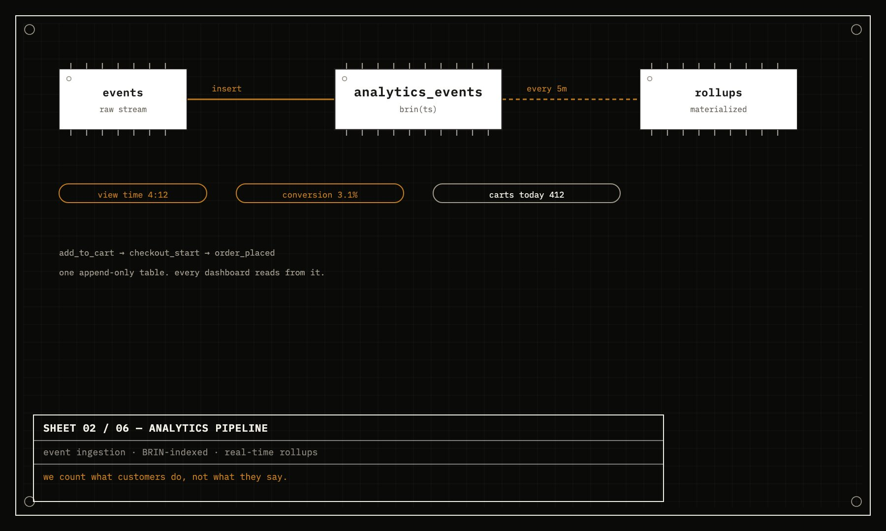
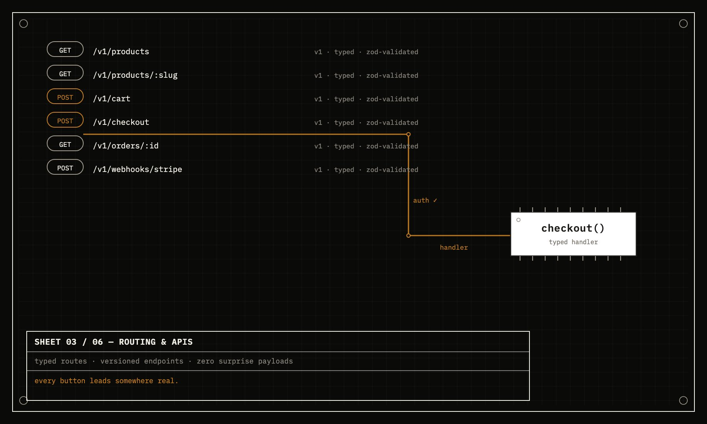
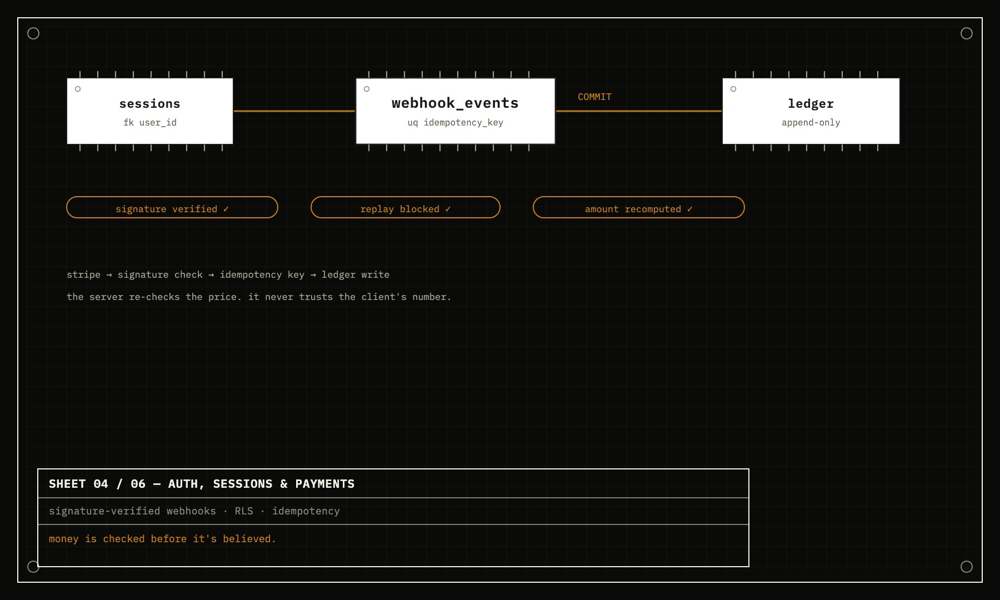
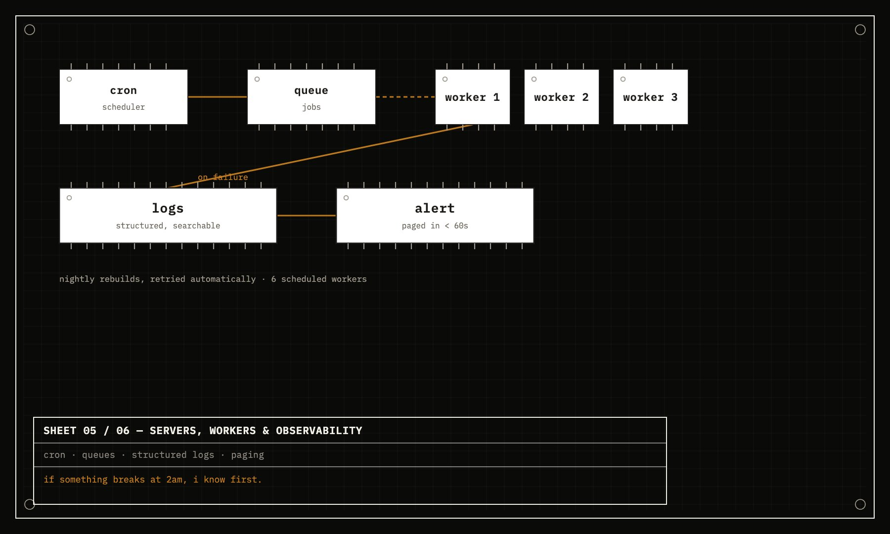
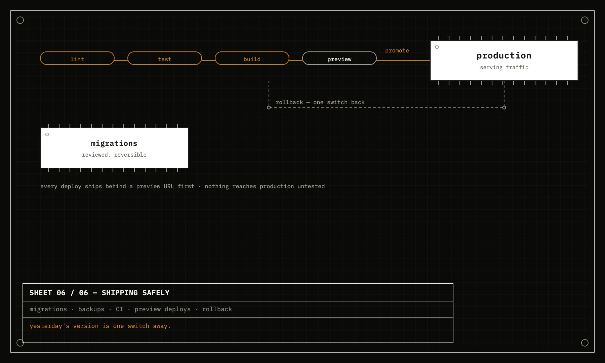

The part that keeps it running
SYSTEMS
Six sheets, drawn like the engineering documents they are — the schema, the pipelines, and the guarantees underneath everything the front shows.
-
01
On the homepage
Database architecture
normalized · indexed · row-level secure · ACID · triggers · WAL

-
02
The analytics pipeline
event ingestion · BRIN-indexed · real-time rollups · view time · conversion

-
03
Routing & APIs
typed routes · versioned endpoints · the machine-facing navigation

-
04
Auth, sessions & payments
signature-verified webhooks · RLS · idempotency · the ledger

-
05
Servers, workers & observability
cron · queues · logs · who finds out first when something breaks at 2am

-
06
Shipping safely
migrations · backups · CI · preview deploys · rollback
